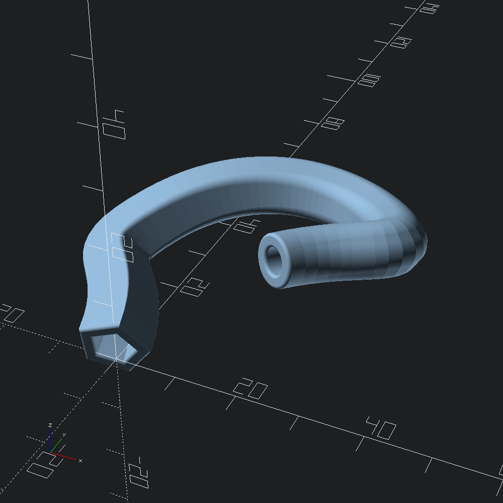
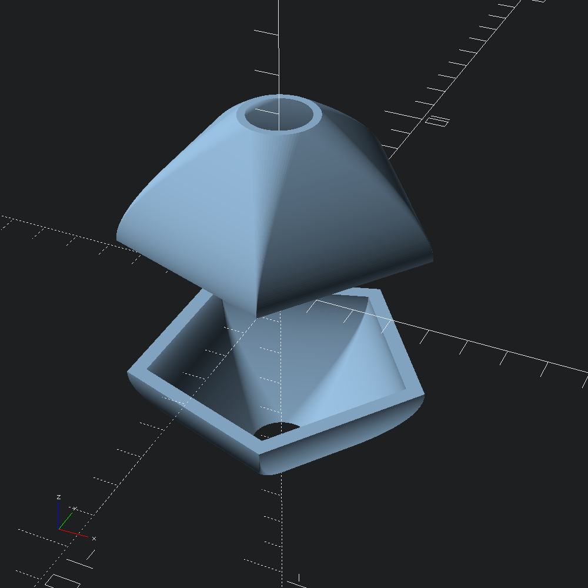

open OCADml
open OSCADmlWhile Mesh.sweep and it's derived functions are useful for sweeping fixed polygons with holes, as shown in the rounded sweeps demo, the Mesh.morphing_sweep family provides a means to do so with different shapes at the beginning and end.
let () =
let path =
let control =
V3.[ v 0. 0. 2.; v 0. 20. 20.; v 40. 20. 10.; v 30. 0. 10. ]
|> Path3.quaternion (Quaternion.make (v3 1. 1. 0.) (Float.pi /. -5.))
in
Bezier3.curve ~fn:60 @@ Bezier3.of_path ~size:(`Flat (`Rel 0.3)) control
and caps =
Mesh.Cap.{ bot = round @@ circ (`Radius 0.5); top = round @@ circ (`Radius 0.5) }
and a = Poly2.ring ~fn:5 ~thickness:(v2 2.5 2.5) (v2 6. 6.)
and b = Poly2.ring ~fn:80 ~thickness:(v2 2. 2.) (v2 4. 4.) in
Mesh.path_morph ~refine:2 ~caps ~path ~outer_map:`Tangent a b
|> Scad.of_mesh
|> Scad.to_file "tangent_morph_sweep.scad"
Similar to the ?scale_ez and ?twist_ez parameters on Path3.to_transforms and those that make use of it, such as Mesh.morph, the morphing sweep functions in the Mesh module expose ?ez, which offers the same style of bezier easing (see Easing) for morphs.
let () =
let scad =
Mesh.morph
~refine:2
~ez:(v2 0.42 0., v2 1. 1.)
~slices:60
~outer_map:`Tangent
~height:3.
(Poly2.ring ~fn:5 ~thickness:(v2 0.5 0.5) (v2 4. 4.))
(Poly2.ring ~fn:80 ~thickness:(v2 0.2 0.2) (v2 1. 1.))
|> Scad.of_mesh
in
Scad.(
union
[ translate (v3 0. 0. 2.) scad
; translate (v3 0. 0. (-2.)) @@ rotate (v3 Float.pi 0. 0.) scad
])
|> Scad.to_file "eased_morph.scad"